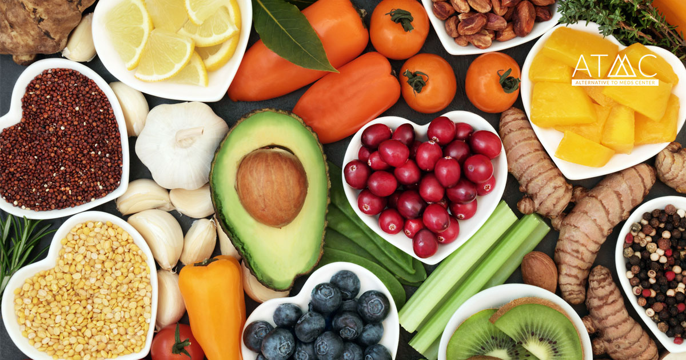

Good nutrition enhance performance, recovery and Overall well-beings.
__Nutrition for Runners
A good nutrition can make training more efficient and recovery faster.
(Click the following buttons for more information)
Calories Content
Calories are the energy currency for runners. They fuel workouts, sustain endurance, and help maintain a healthy weight. It's important to consume an appropriate number of calories based on activity level, age, gender, and body composition.

Carbohydrates
Carbohydrates are the body's primary source of energy during exercise. Complex carbs like whole grains provide sustained energy, while simple carbs (like fruits) can be helpful for quick energy boosts.

Protein
Muscle Repair and Growth: Protein is crucial for muscle repair and growth. Runners should consume enough protein to support recovery and minimize muscle breakdown.

Fat and Fatty Acids
Energy Reserve: Dietary fats serve as an energy reserve for longer runs and help protect vital organs. Omega-3 Fatty Acids: These healthy fats play a role in reducing inflammation, improving cardiovascular health, and supporting overall well-being.

Vitamins and Minerals
Nutrient Absorption: Essential vitamins and minerals are necessary for the absorption of macronutrients and overall health. Electrolytes: Minerals like sodium, potassium, and magnesium help maintain fluid balance, muscle function, and prevent dehydration during exercise.
Water
Hydration: Staying properly hydrated is vital for endurance athletes. Dehydration can lead to decreased performance, muscle cramps, and heat-related illnesses. Water is essential for regulating body temperature and transporting nutrients.
Supplements
Individual Needs: Supplements may be considered if there are specific deficiencies or individual requirements. Common supplements for runners include vitamin D, iron, and omega-3 fatty acids.

__ GET IN TOUCH
location
SWJTU,Chengdu,China
Opening Hour
9 to 5
Say hello
el22y2f@leeds.ac.uk
CopyRight
2023 Yujie Feng. All rights reserved.